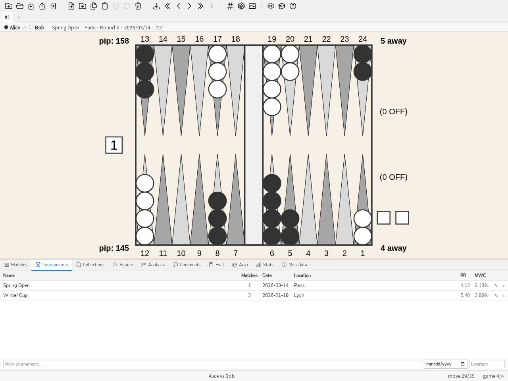
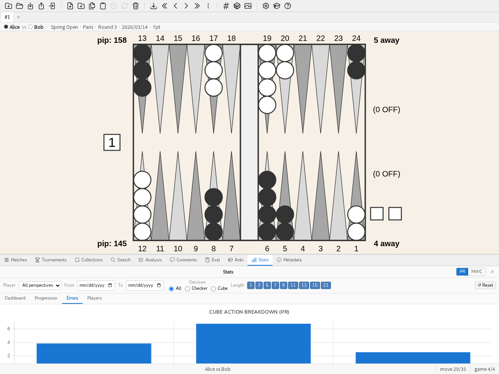

3. Manual
3.1. Introduction
blunderDB is software for creating backgammon position databases. Its main strength is to provide a single place to aggregate positions that a player has encountered (online, in tournaments) and to be able to re-study these positions by filtering them according to various arbitrarily combinable filters. blunderDB can also be used to create catalogs of reference positions.
Positions are stored in a database represented by a .db file.
3.2. Main Interactions
The main interactions possible with blunderDB are:
add a new position,
modify an existing position,
copy the board image to the clipboard (PNG) via CTRL-X, or with the full analysis via CTRL-X CTRL-X,
delete an existing position,
search for one or more positions,
import matches from various sources (XG, GNUbg, BGBlitz, Jellyfish), including comments from XG files,
navigate through the moves of an imported match,
organize positions into collections,
organize matches into tournaments.
The user can freely tag positions and annotate them with comments.
3.3. Description of the interface
The interface of blunderDB is composed, from top to bottom, of:
[top] the toolbar, which gathers all the main operations that can be performed on the database,
[in the middle] the main display area, which allows for displaying or editing backgammon positions,
[at the bottom] the status bar, which provides various information about the database or the current position, and integrates the command line.
Panels can be displayed to:
display the analysis data associated with the current position from eXtreme Gammon (XG), GNUbg, or BGBlitz,
display, add, or modify comments,
search and filter positions using combinable criteria,
display and manage position collections (collections panel),
display the list of imported matches and navigate through the moves of a match (match panel),
display and manage tournaments (tournaments panel),
display performance statistics (Stats panel),
compute the EPC (Effective Pip Count) of a bearoff position (Eval panel),
study positions with spaced repetition (Anki panel),
display the database metadata (metadata panel).
Modal windows can be displayed to:
display the blunderDB help,
display the catalogue of guided tours (see Guided tours and sample database),
configure database export settings,
configure blunderDB, in particular the interface language (see Configuration).
The main display area provides the user with:
a board to display or edit a backgammon position,
the level and owner of the cube,
the pip count of each player,
the score of each player,
the dice to play. If no values are shown on the dice, the position of the dice indicates which player is on roll and that the position is a cube decision. When the cube decision is a response to a double (take/pass), the offered cube is shown in the centre of the board, at the offered value.
The status bar is structured from left to right with the following information:
the command line, accessible by pressing the SPACE key,
an informational message related to an operation performed by the user,
the index of the current position, followed by the number of positions in the current library (or move/game info when navigating a match).
Note
In the case of positions resulting from a user search, the number of positions indicated in the status bar corresponds to the number of filtered positions.
3.4. View Tabs
Below the toolbar, a tab bar lets you work with several views in parallel. Each view is an independent workspace that keeps its own position list, the index of the current position, the displayed position, the analysis and the selected move, the active panel, the comment being edited, as well as the navigation context within a match. This makes it possible, for example, to keep a search open in one view while browsing a match in another.
Create a view: click the + button of the tab bar or press CTRL-T. The new view starts as a copy of the current view.
Close a view: click the cross on the tab or press CTRL-W. The last view cannot be closed.
Switch view: click a tab, press CTRL-PageUp / CTRL-PageDown (or SHIFT-J / SHIFT-K) to move to the previous / next view, or CTRL-1 to CTRL-9 to jump directly to the n-th view.
Rename a view: double-click the tab, type the new name and confirm with ENTER.
Views are saved with the database session state and restored when it is reopened.
3.5. Configuration
The settings button (gear icon) in the toolbar, to the left of the help button, opens blunderDB’s settings window. It is organised in five tabs:
Interface — language, display scale, panel position;
Colours — the board’s colours;
Bearoff — the extended two-sided bearoff database used by the Bearoff panel;
gammonNet — the settings of the embedded evaluator, described below;
Issuer identity — the key that signs your watermarks, described in Handing out a database: origin and password.
The Interface tab lets you choose the language among English, French, German, Italian, Spanish, Finnish, Japanese, Greek and Russian. The whole interface (toolbar, panels, messages, help) is translated into the selected language. The language choice is saved and kept across sessions.
The same tab also offers a Compact database button, which reclaims the disk space left behind by deletions (matches, tournaments, purges): the database never shrinks by itself when data is deleted, that compaction has to be requested explicitly. The operation can take a while on a large database and temporarily needs about twice its size in free disk space (blunderDB refuses to start rather than risk an interrupted compaction); a confirmation is therefore asked before it runs. The result — the space gained, in megabytes — is then shown in the status bar. The same operation is available on the command line through blunderdb vacuum (see Command Line Interface (CLI)).
The Open the log folder button just below it opens the folder holding the application log — useful for attaching details to a bug report, especially when blunderDB was started from a shortcut or a double-click, with no terminal attached to show anything.
The Check for updates at startup checkbox, off by default, queries the GitHub repository’s releases page once per launch and shows a message in the status bar when a newer version is available — never a window that gets in the way. This check stays automatically disabled on an installation that came through a package manager (Flatpak, Homebrew, a distribution package…): that channel is the one handling updates then, not blunderDB itself.
The Board colours tab lets you customise the board’s colours. Each element has its own colour picker: the background, the border, the light and dark points, player 1’s and player 2’s checkers, the dice, the dice pips and the cube. The Reset button restores all the default colours. Like the language, the chosen colours are kept across sessions.
The Bearoff tab manages the Eval panel’s bearoff tables (see Eval Panel). They are neither embedded in the executable nor downloaded: blunderDB computes them on the machine that uses them, and the result is identical byte for byte to what gnubg produces — the SHA-256 fingerprint is checked before a table is accepted.
The two ordinary tables (TS-06-06 for the cube verdict, OS-06 for the EPC) are computed on first launch, in the background and without asking: about six seconds on one core, during which the application is used normally. The Eval panel mentions it only if a position is placed there that needs a table which is not ready yet.
The tab shows the active domain and its origin, the state of the one-sided table the EPC reads, the folder where all this lives, and the list of the tables present with their size and their verdict. Each row can be deleted individually, after confirmation.
Verified or unverified. A verified table has exactly the bytes gnubg produces for its domain: its SHA-256 fingerprint is recorded in blunderDB and was found again. An unverified table is well formed but its domain has no recorded fingerprint — nothing is held against it, simply nobody has compared it to the reference. A corrupt table contradicts itself and is never read; it is recomputed.
Computing a wider table. The domain is picked from a list of two families, together with the number of cores to give it (by default all but one, so the machine stays usable):
exact cube (two-sided), from TS-06-06 to TS-06-15: widens the domain where the winning probability and the cube verdict are read rather than estimated;
EPC beyond the home board (one-sided), from OS-06 to OS-10: widens how far from home a chequer may stand without the EPC block going silent. This sweep reads only positions smaller than the one it is computing, so it is sequential by construction and the core count buys it nothing — the picker says so by greying out.
Before anything starts, the tab states three figures for the chosen domain: the size on disk, the memory needed during the computation, and the time it should take on this machine. The last one starts as an estimate and becomes a measurement: every run wide enough records its own speed and keeps it. A domain the available memory cannot hold is offered greyed out, with the reason — “it would need 24 GB, 12 are left” is an answer, an absent row would not be.
As an order of magnitude, on a sixteen-thread machine: TS-06-09 weighs 191 MB and takes about ten seconds, TS-06-11 weighs 1.2 GB and a few minutes, TS-06-13 exceeds what most machines can hold in memory. On the one-sided side, on one core: OS-07 weighs 4.9 MB and takes 17 s, OS-08 15 MB and 1 min 20, OS-10 117 MB and half an hour.
Pause and resume. During the computation, the progress shows the measured remaining time and two distinct buttons: Pause and Cancel. Pausing writes the state of the computation beside the table; running it again continues where it stopped instead of starting over. Cancelling keeps nothing. Closing the configuration window interrupts nothing — the computation carries on in the background.
A paused computation is found again at the next launch, named and quantified (“TS-06-09 interrupted at 43%”), with Resume and Delete. Nothing restarts on its own: the user is the one who asked it to stop.
The tab finally allows pointing to an external two-sided .bd file, for example a database produced by gnubg itself: the table with the widest domain wins.
The gammonNet tab configures the embedded evaluator (see ADR-0011). Two search depths can be set there, named and kept separately — lowering one never changes the other:
Display depth — the interactive comfort while editing the board; never written to the database.
Analysis depth — what the post-import analysis batch writes into a position’s Analysis.
Both default to 2-ply, the canonical configuration. The tab also offers pruning (k=12 by default) and the number of candidate moves shown (10 by default), as well as an auto-analyze after import box which, once ticked, checks after every import whether positions with no analysis at all remain (neither gammonNet, nor XG, nor GNUbg, nor BGBlitz — the rule is “an evaluation only fills a hole”, never a replacement) and, if so, starts a gammonNet analysis in the background at the configured analysis depth. An Analyze now button re-runs the same catch-up manually, useful for a library built before this feature existed.
A second button, Re-analyze stale positions, covers the opposite case: a position already analyzed by gammonNet, but whose stored analysis was written by an engine version older than the one currently running, or at a depth different from the analysis depth configured above, is flagged there as stale and re-evaluated. A position that also carries an XG, GNUbg or BGBlitz analysis is never touched by this button, whatever its gammonNet content — ADR-0013’s protection remains unconditional. The count shown next to each button (positions with no analysis, stale positions) is purely informational; the batch recomputes its own list when it starts.
Both batches are bounded, visible and cancellable, never a silent daemon: their progress (positions analysed / total) and a cancel button appear in the status bar for their whole duration, and disappear once finished in favor of a message summarizing the result — how many positions were analyzed, how many were refused (a position gammonNet declines to evaluate, such as a match score beyond its MET’s range, which is never a failure) and how many failed (retried, unchanged, on the next run). Closing the application during either loses nothing: each analyzed position is written as it goes, and the next run resumes exactly where the analysis stopped, with no journal to keep.
The configuration window also provides interface display settings. An interface scale slider lets you enlarge or shrink all interface elements, which is useful on high-density screens or to improve readability. A panel position menu sets where the panels (search, matches, analysis) appear relative to the board: bottom, side or automatic (the side is then chosen on wide screens to make better use of the available space). Like the other settings, these choices are kept from one session to the next.
3.6. Guided tours and sample database
To make getting started easier, blunderDB offers guided tours of the interface. The tour catalogue opens from the toolbar or with the tour command (alias tutorial). Seven tours are available: a general tour of the interface, and tours dedicated to searching positions, reviewing matches, reviewing tournaments, the Eval panel, Anki review and statistics. Each tour highlights the relevant interface elements, step by step, opens the panel it talks about along the way, and can be replayed at any time. On first launch, the general tour is offered automatically.
The demo command loads a sample database that lets you explore the tool’s features without importing your own games: three matches (two of them grouped in a tournament) analysed by eXtreme Gammon, BGBlitz and gammonNet, three thematic collections, tagged comments (#blunder, #cube) and an Anki deck with its review log. The players, the tournament and the venue are fictional. The guided tours rely on this database when no database is open.
3.8. Editing positions
Pressing the TAB key opens the search panel and allows editing a position on the board to add it to the database or to define a position structure to search for. The distribution of checkers, the cube, the score, and the turn can be modified using the mouse (see Edit a position).
Tip
Refer to Keyboard shortcuts for available shortcuts.
3.9. The command line
The command line, integrated into the status bar, allows you to perform all the functionalities of blunderDB available in the graphical interface: general operations on the database, position navigation, displaying analysis and/or comments, searching for positions based on filters… After getting familiar with the interface, it is recommended to gradually use the command line for a powerful and smooth use of blunderDB, especially for position search functionalities.
To open the command line, press the SPACE key. To submit a query and close the command line, press the ENTER key.
blunderDB executes the queries sent by the user as long as they are valid and immediately modifies the state of the database if necessary. There are no explicit save actions required from the user.
Tip
Refer to Section 4 for the list of available commands in the command line.
3.10. Analysis Panel
The Analysis panel (CTRL-L) displays the analysis data for the current position, imported from eXtreme Gammon (XG), GNUbg, or BGBlitz. It shows the best alternatives (checker moves or cube decisions) with their equity values and corresponding errors. The d key toggles between checker and cube analysis. During match navigation, the actually played move is highlighted in the list of alternatives. Press CTRL-L or run the list command to show or hide the panel.
Moves are written as they read on the board, here as in the Eval panel: the least advanced checker moves first, and a checker that chains several dice is written only once — a 64 played with the same checker reads 24/14, and 24/14* if it hits on arrival. The detail of the chain only reappears when it says something more: a hit on the way keeps its intermediate point, 24/18* 18/14, without which the hit on the 18 would vanish from the notation.
An imported analysis’ equity follows the same rule as the Eval panel: the column states its own referential, “Equity (money)” or “Equity (match)” depending on the score of the analysed position, never a plain “Equity” silent on the scale. The Jacoby and Beaver rules active on a money-game position are also shown, in badges under the cube decision table.
3.11. Comments Panel
The Comments panel (CTRL-P) displays, adds, and edits comments associated with the current position. Comments imported from XG files are automatically associated with the corresponding positions. Press CTRL-P or run the comment command to show or hide the panel.
3.12. Search Panel
The Search panel (CTRL-F or TAB) filters positions using freely combinable criteria: checker structure, cube decision type, error magnitude, dates, tags, etc. The TAB key simultaneously opens the search panel and the position editor, allowing a checker structure to be defined directly on the board.

The Search panel: numeric filters, checker structure on the board, At least / Except tabs.
To refine a search among the currently filtered positions, use the ss command followed by filters (e.g.: ss nc, ss E>40). The search panel also offers a Search in current results checkbox for the same functionality.
The panel offers an explicit control over the decision type searched for: Indifferent (no filter), Checker (checker decisions) or Cube (cube decisions). When Cube is selected, a second list specifies the sub-type: All, Double / No double (the player on roll has to decide whether to double) or Take / Pass (response to an opponent’s double). The control is synchronised with the board: editing the dice or the cube on the board updates the decision type, and vice versa. In Take / Pass mode, the cube is shown in the centre of the board at the offered value; that value remains editable.
The Flagged filter keeps the positions you flagged in the software the match came from. Only eXtreme Gammon produces this information, recorded move by move in the .xg file; blunderDB reads it on import and keeps it. A flagged cube decision yields two flagged positions, the double and the take/pass, blunderDB splitting in two what the source file records as a single decision.
Note
Flagging is not retroactive: matches already in the database do not carry this information, since it exists only in the source files. Simply import the relevant .xg file again — the import detects the duplicate and adds nothing but the flags, leaving existing comments and analyses untouched. A flag can neither be set nor removed from within blunderDB: for a temporary working list, use a collection instead.
The Comment filter queries the comments attached to positions in three exclusive modes. contains text searches for one or more words in the comment text (input field, words separated by ;, at least one must match); has a comment keeps any position carrying a comment, whatever its content; no comment keeps, on the contrary, the positions that are not annotated — useful, combined with an error or date filter, to draw up the list of what remains to be commented.
Note
Comments imported from a match file (XG, GNUbg) count as comments: blunderDB does not record their origin and therefore cannot tell a note you typed from one taken over from the source file. Moreover, comments attached to a match or a tournament are not concerned: they annotate the match or the tournament, not its positions.
The Matches & Tournaments filter is backed by a shared picker (a modal window) instead of typed numeric IDs: two checkbox lists, one for matches and one for tournaments, each text-filterable (player, date, event for matches; name, date, location for tournaments), with All / None buttons that act only on the currently filtered subset. Checking a tournament automatically checks (and greys out) its member matches in the match list, making visible the fact that a tournament is equivalent to the set of its matches.
The search panel has three tabs along its left edge: Search (the filters), History and Saved. The History tab lists past searches with their date and command: a click selects a search and displays the associated position on the board, a double-click re-runs it. Each entry can be saved to the filter library (bookmark icon, by giving the filter a name) or deleted. The Saved tab contains the filter library: double-click a saved filter to re-run the corresponding search (see Annex: Advanced Filter Usage). The history command (alias hi) opens the search panel.
Tip
Refer to Section 4 for the list of available filters.
3.13. Collections Panel

The Collections panel: name, number of positions, description, last modified.
The Collections panel (CTRL-B) manages collections of positions. Collections can be created, renamed and deleted. Positions can be added to them or removed (Del key, confirmation asked). Double-click a collection to browse its positions with the LEFT and RIGHT keys. The order of the collections, and of the positions within a collection, can be changed by drag and drop. Press CTRL-B or run the collection command to show or hide the panel.
3.14. Matches Panel
The Matches panel (CTRL-Tab) lists imported matches. Double-click a match (or press ENTER) to navigate through its moves. The m command resumes navigation in the last visited match.
The user can:
browse through the moves of a match using the LEFT and RIGHT keys,
switch between games using the PageUp and PageDown keys,
display the move analysis (checker and cube) by pressing CTRL-L,
toggle between checker move and cube analysis with the d key,
see the actually played move highlighted in the analysis.
The last visited position in each match is saved and restored automatically. Press CTRL-Tab or run the match command to show or hide the panel.
Each match can be exported as a Jellyfish .mat transcript via the ⬇ button in the match list or the .mat button of the match sheet.
The Merge players button in the panel toolbar opens a window listing all the player names in the database with their number of matches: select the spelling variants of the same player, choose the canonical name to keep, then merge. Useful to unify per-player statistics when the same player appears under several names.
When a match is open, an information bar appears above the board: it recalls the players involved (player 1 versus player 2) as well as the match context (event, location, round, date and match length, when this information is available). This bar is also shown outside match mode: when a studied position (from a search, a collection or a direct access) comes from one or several matches, it indicates its provenance — the first match concerned and, where applicable, a “+N” badge listing the others on hover. A position imported on its own, which no match references, shows nothing.
When opening a database that contains matches, the Matches panel is shown right away and the review starts directly on the first position, so you can begin navigating immediately.
Note
A database can be opened for writing by only one window at a time. If you open a database already open in another blunderDB window, it opens read-only: navigation, search and analysis remain possible, but any modification is disabled and the title bar shows “[read-only]”.
Tip
Refer to Keyboard shortcuts for available shortcuts.
3.15. Tournaments Panel
{kind=link}

The Tournaments panel: one tournament per row, number of matches, reference player’s PR.
The Tournaments panel (CTRL-Y) groups matches into tournaments for organised tracking and per-event statistical analysis. Tournaments can be created, renamed, and deleted; matches can be assigned to them. Stats panel statistics can be filtered by tournament. Press CTRL-Y to show or hide the panel.
Tournaments fill themselves at import time. XG, GnuBG and BGF files name their event; when a new match is imported, blunderDB files it under the tournament of that name, creating it if it does not exist yet. The tournament’s date and location are left empty — this panel is where they are filled in. A match already in the database is never refiled: re-importing its file does not undo what was arranged by hand.
The PR column of each tournament shows the PR of the reference player — that is, the player appearing in the greatest number of the tournament’s matches (in case of a tie, the one who made the most decisions). The PR therefore does not mix your play with your opponents’: for your own tournaments, it reflects your performance alone. The reference player’s name appears in a tooltip when hovering over the value.
3.16. Stats Panel
3.16.1. Introduction
The Stats panel lets you analyse your play level and track your progress over time using the positions imported in the database. It computes and displays PR (Performance Rate) and MWC cost (Match Winning Chance cost) for all positions or a filtered subset.
The Stats panel is especially useful for:
gauging your level against reference thresholds (world-class, expert, advanced…) using the global PR;
tracking your progress tournament by tournament or match by match using the Progression tab charts;
identifying your weak spots: the Errors tab shows the breakdown between checker plays and cube decisions, and the distribution of error magnitudes;
compare the players in the database with one another, one row per player, through the Players tab — useful for following an entire competition;
navigating directly to the relevant positions by clicking any indicator (drill-down).
3.16.2. Opening the panel
To open the Stats panel:
Press CTRL-D.
Type the command
:statsor:stin the command line.
Note
The panel refreshes automatically whenever the filter is changed. It does not recalculate statistics on a simple PR ↔ MWC toggle: both metrics are computed simultaneously by the backend.
3.16.3. Filter bar
The filter bar at the top of the panel restricts the computation to a subset of positions.
3.16.3.1. Player perspective
The Player drop-down filters statistics to the analysed player. blunderDB automatically selects the player whose name appears most often in the database — changeable at any time.
Tip
Changing the player does not cause any data loss; simply re-select the previous player in the list.
3.16.3.2. Available filters
Tournament(s) — restrict to one or more tournaments. Multiple tournaments can be selected simultaneously.
Dates — time range (From … To). If only the start date is set, more recent positions are included.
Decision type — All / Checker plays / Cube decisions.
Match length — restrict to specific match lengths (1, 3, 5, 7, 9, 11, 13, 15, 21 points). Multiple lengths can be combined.
A Reset button clears all filters (except the auto-detected player).
Note
Filters are saved in the blunderDB configuration (config.yaml) and restored on the next launch.
3.16.4. PR / MWC toggle
The PR / MWC button at the top of the panel toggles the metric displayed across all tabs.
PR (Performance Rate)
Measures money-game play quality: sum of errors in milli-points, divided by the number of decisions. Independent of match score.
Approximate reference thresholds:
Level
PR
World-class
< 3
Expert
3 – 5
Advanced
5 – 8
Intermediate
8 – 12
Beginner
> 12
MWC cost (Match Winning Chance cost)
Cumulative match winning probability lost due to errors, over the full filtered dataset. Computed using the Kazaross-XG2 MET embedded in blunderDB.
Caution
MWC cost does not apply to money-game positions (with no match stake). Those positions are excluded from the MWC computation. MWC values depend on the MET used; they are not directly comparable across software using different METs.
The PR ↔ MWC toggle is instant: no backend recalculation is performed.
3.16.5. Dashboard tab
The Dashboard tab gives a summary view of key indicators.

The Dashboard tab: global PR, checker PR, cube PR.
3.16.5.1. Level cards
Three cards display the PR (or MWC) for:
All — all decisions (checker + cube);
Checker — checker plays only;
Cube — cube decisions only.
Clicking a card loads the positions in the corresponding subset into the analysis panel (drill-down).
Note
The total number of decisions is shown at the bottom of each card on hover.
3.16.5.2. Rolling PR over last N decisions
A row of PR (or MWC) values computed over the last N decisions (N = 5, 10, 50, 100, 250, 500, 1000) lets you measure the recent trend. Greyed values correspond to an N larger than the number of available decisions.
Clicking a value loads the corresponding last N positions.
3.16.5.3. Top blunders
The list of the 10 worst errors (or MWC cost), sorted by descending magnitude. Clicking a row loads the relevant position in the analysis panel.
3.16.6. Progression tab
The Progression tab shows how your level evolves over time.
3.16.6.1. Tournament line chart
A line chart displays the PR (or MWC) for each tournament (X axis: tournament order, Y axis: metric value). Colour bands materialise the level thresholds.
Clicking a point on the chart opens a context menu with two options:
Open tournament — opens the tournament in the Tournaments panel.
Open positions — loads all positions from the tournament into the analysis panel.
3.16.6.2. Match scatter plot
A scatter plot represents each match (X axis: date, Y axis: PR or MWC). Point size is proportional to the number of decisions in the match.
Clicking a point opens a context menu:
Open match — opens the match in the Matches panel.
Open positions — loads all positions from the match into the analysis panel.
3.16.7. Errors tab
The Errors tab breaks down error sources.
{kind=link}

The Errors tab: PR breakdown by cube action.
3.16.7.1. Breakdown by cube action
A bar chart displays the PR (or MWC) for each type of cube decision: NoDouble, DoubleTake, DoublePass, TooGood. Each bar also shows the number of decisions and the blunder rate in a tooltip.
Clicking a bar loads the positions matching that cube action, only those with an error (drill-down).
3.16.7.2. Direction of cube errors
The breakdown above says how much cube decisions cost; this table says in which direction they go wrong.
A cube position carries two decisions taken by two different players, presented here as two rows:
Offer — the player holding the cube doubles or does not. Their errors are the missed doubles (a double was called for) and the premature doubles (it was not).
Answer — the player being offered the cube takes or passes. Their errors are the wrong passes (a correct take was passed) and the wrong takes (a correct pass was taken).
The two rows are deliberately kept apart: a player can perfectly well double late and take loosely, and a single figure would call that “balanced” while losing both halves of the information.
Each cell shows the number of decisions; the tooltip gives the cumulated equity lost. Clicking a cell loads the matching positions. A cell at zero is not clickable.
Note
This table counts decisions, it passes no judgement. At what gap a tendency deserves to be named depends on the sample size and on a point of reference, neither of which the engine holds.
3.16.7.3. Checker / Cube comparison
A comparison chart places checker plays and cube decisions side by side. Clicking a bar loads the positions in the subset with an error.
3.16.7.4. Error magnitude histogram
A histogram distributes errors by magnitude in milli-points (buckets: 0–5, 5–10, 10–25, 25–50, 50–100, ≥ 100). Clicking a bar loads the positions in the bucket.
3.16.8. Players tab
The three previous tabs describe one player; the Players tab compares them all. It shows one row per player in the database, which answers the need of an organiser following a whole competition rather than one particular player.

The Players tab: one row per player, sortable by any column.
Columns, in order:
Column |
Meaning |
|---|---|
Player |
The name as it appears in the matches. A player recorded under two spellings therefore shows up on two rows; use the player merge to bring them together. |
Matches |
Number of matches played within the retained period. |
W–L |
Wins and losses. An unfinished match (truncated log, resignation) counts as neither: W + L can therefore be lower than the number of matches. |
Decisions |
Number of counted decisions — the PR’s denominator. This is the column that says what the neighbouring rates are worth: a PR computed over twelve decisions means nothing. |
PR |
Overall Performance Rate. |
Checker PR, Cube PR |
The PR split by decision type. |
Snowie |
Snowie Error Rate (see Annex: Statistics model — XG / gnuBG / blunderDB alignment). |
Blunders |
Number of serious errors (at least 0.100 EMG). |
Luck |
Average luck per roll, in thousandths of a point, signed: positive if the dice were favourable. |
Use:
Sort — click a column header. The table opens sorted by ascending PR, best player first. Players for whom nothing was measured stay at the bottom whichever way the sort goes: a zero for lack of data is not a perfect performance.
Open a player’s detail — click a row. The player is selected in the filter bar and the display switches to the Dashboard tab.
Narrow the period — the date, tournament and match-length filters apply as usual, which makes it possible to bound the table to the dates of a competition.
Note
In this tab, the Player list and the decision type choice are disabled: the table shows every player, and already splits checker and cube decisions into separate columns.
Important
A dash (”—”) marks a value that was never measured, not to be confused with zero. That is notably the case of the Luck column for any match imported before schema version 2.15.0: luck was not stored back then, and nothing allows it to be reconstructed afterwards — the source files must be re-imported. Formats that do not carry it (BGF, Jellyfish .mat) never will.
3.16.9. Aggregation rule
Important
The PR of a tournament (or any subset) is computed using the sum/sum rule — never as an average of individual match PRs.
Formula:
Example: a player plays two matches in a tournament —
Match A: 10 decisions, total error 50 mp → PR = 5.0
Match B: 90 decisions, total error 270 mp → PR = 3.0
Naive average of PRs: (5.0 + 3.0) / 2 = 4.0 (incorrect)
Sum/sum rule: (50 + 270) / (10 + 90) = 320 / 100 = 3.2 (correct)
The sum/sum rule is the only one that handles varying match lengths correctly (a 21-point match carries more weight than a 1-point match).
3.16.10. MWC: limitations
The MWC cost is computed using the Kazaross-XG2 MET, the de facto reference table in competitive backgammon. Results are not directly comparable with software using other METs.
Money-game positions (with no match score) are excluded from the MWC computation. If your database contains many money-game positions, the MWC cost may be underestimated or unavailable.
The MWC cost is cumulative over the full filtered dataset — not a per-decision indicator. It measures the total impact of your errors on your winning chances.
3.17. Eval Panel
The Eval panel (CTRL-E) evaluates live whatever position sits on the board; on a bearoff position it specialises and additionally computes the EPC (Effective Pip Count). It is opened by pressing CTRL-E, by clicking the Eval tab in the lower panel, or by running the epc command.
The panel always shows the single decision the position on the board calls for — never two at once — and the facts that go with it. Each quantity is read in the axis that suits it rather than in a single imposed axis: the winning, gammon and backgammon probabilities and the cubeless equity of each player, computed before the roll, are read per player (bottom, top, then Δ), to the left of the cube decision, when no dice are showing. Facts and decision stay side by side: the cube decision never drops below the figures that justify it, whatever the interface language and the position on the board. As soon as dice are showing, these same before the roll values change axis: they are read on roll, at the head of the candidate-move list, as an italic before the roll row — not one more candidate move, a reference against which to read each move. The gap between that row and a move contains the luck of the roll, never the merit of the move, and so it carries no error column. On a pure bearoff position, a second table, still per player and always present, dice showing or not, carries the EPC, the pip count, the wastage, the average number of rolls and the standard deviation; these five columns never migrate. The two tables are stacked and share the same column grid: same edges, same column guides, a single column of dots — they read as one two-storey object. The regime badge, the engine attribution (the depth of the last evaluation appears there too) and the Challenge box form a separate strip, right-aligned above the tables.
Only the candidate-move list scrolls — the before the roll row, too, stays pinned above it; the rest of the panel (facts, badge, cube decision) always remains visible, with no particular adjustment of the panel size.
The facts table and the decision are computed by gammonNet, embedded, without XG or gnubg. The computation follows the position without ever freezing the interface: a 0-ply depth is displayed immediately on every gesture, then, after half a second of stillness, a deeper evaluation (2 plies by default, adjustable in the gammonNet tab of the settings) replaces it in the background — any new gesture cancels that background computation. The depth shown in the badge strip, or inside the regime badge on a race position, is always the one that actually produced the figure shown, never the one requested; it is not repeated on every row, since a live evaluation shares the same depth for all moves. The equity of the candidate moves and of the cube decision follows the score of the position: in money game it is expressed in points, at a match score in normalised equity — the same scale as XG and GNU Backgammon, where winning the value of the current cube is worth +1 and losing it −1 — never mixed in the same table. The column header states it explicitly rather than leaving the scale to guess: “Equity (money)” in money game, “Equity (match)” at a match score. It accounts for the live cube: the search values every terminal position through the cube model (Janowski, measured efficiency) in the position’s cube state, the way XG and GNU Backgammon do in cubeful evaluation. This is what makes the gammon-go and gammon-save effects visible at the score — at 4-away/2-away, the player behind plays 8/2 6/2 on an opening 6-4 because an early double will give the gammon the value of the match, something a cubeless evaluation cannot see. The before the roll row, by contrast, stays a cubeless equity: it is a fact about the position, not a decision. This panel never modifies the database: it is a computation, not a stored analysis. Clicking a candidate move shows it on the board as arrows, exactly as in the Analysis panel. The discreet ? button, in the badge strip, leads to the gammonNet engine repository; the full attribution (Strehl network, gammonNet configuration) appears in the Acknowledgments of the help.
The user edits the checker position over the whole board, exactly as in edit mode: left click places a checker of the bottom player, right click a checker of the top player. The second table, the race one, only appears when the resulting position is a pure bearoff (all checkers of both players in their home board); on any other position, only the table of the four common columns (win, gammon, backgammon, cubeless) responds, and the decision bears on the checkers or on a generic cube depending on whether dice are showing.
In each facts table, one row per player — identified by its coloured dot, the black player always at the bottom. The first carries, as long as no dice are showing, the player’s win, gammon and backgammon (probabilities, without the % sign) and cubeless equity; the second, on a bearoff position and dice showing or not, the EPC, the pip count, the wastage (difference between the EPC and the pip count), the average number of rolls and the standard deviation. When both players have values to compare, a Δ row gives the signed differences (bottom − top: negative when the black player is ahead). Outside a race position, showing dice therefore makes the facts tables themselves disappear: the four columns they carried have just changed axis, on roll, at the head of the move list.
The cube decision always has the same shape, whatever the origin of the figures — exact table, evaluated regime or ordinary gammonNet evaluation: one row per option, in the order no double, double/take, double/pass, with its equity in the position’s frame of reference and its gap to the best option. The order never changes, unlike the move list: the three options have names, so it is the name one reads, not the rank. The best one is recognised by its highlighting and by its gap cell left empty. When the cube has already been turned, the options read no redouble, redouble/take, redouble/pass.
A last row gives the verdict. It takes four values: no double, double, take, double, pass and too good to double, the last when playing the position on is worth more than cashing the point: doubling would then be a mistake for the opposite reason to that of a plain no double. It is also the only place where the panel says there is no verdict, rather than suggesting a computation in progress:
no decision — the regime is not entitled to one; the cube verdict is never estimated (see the estimated badge);
not evaluable at this score — the engine refuses the position, typically a score beyond the horizon of the match equity table;
opponent owns the cube and cube dead (Crawford) — the cube cannot be turned. The equities remain displayed, for information, but no option carries a gap: an error is what a choice costs, and there is no choice.
In money game, the Jacoby and Beaver rules active on the position appear under the cube table, in small badges next to the verdict they change: the no double verdict of a position under the Jacoby rule is not the same computation as without it, and nothing else on screen said so.
The regime badge, the evaluation depth, the link to the engine and the Challenge box form a separate strip, right-aligned above the tables.
The player on roll and the cube position are edited directly on the board, as in edit mode: clicking a player’s bearoff/score rectangle gives that player the roll; clicking the cube cycles centred → owned bottom → owned top (right click cycles the other way). The cube value stays pinned — in money game the equities are expressed in units of the current cube, only its owner matters. The analysis is recomputed immediately. In the estimated regime, the badge itself is clickable and opens the Bearoff tab of the settings directly; its tooltip explains why (cube verdict not estimable, ADR-0009) and how to widen the exact domain.
The score is also edited directly on the board, as in edit mode: left click on a player’s score rectangle decrements their number of points to go, right click increments it. Leaving the money score (-1, -1) by editing one side alone automatically aligns the other side on the same value rather than leaving an inconsistent score. On a bearoff position in the exact regime, moving from a money score to a match score leaves the winning probability as it is (a database lookup, valid whatever the frame of reference) but switches the displayed equity and cube verdict to those of the evaluated regime — the exact table being money by construction, it cannot answer the question asked at the score. The badge then becomes composite (“exact (win) · evaluated (cube)”) to say so explicitly.
The dice, finally, are edited the same way, and they are what decides the question being asked: dice on the board make a checker decision (the list of candidate moves), no dice a cube decision. Left-clicking a die raises its value (6 wraps to 1), right-clicking lowers it (1 wraps to 6); clicking a die on a board that has none puts down two at once — a single die would be neither a checker decision nor a cube decision. Clicking a player’s rectangle removes the dice to ask a cube question, and the next click on a die puts them back as they were.
BACKSPACE, or a double-click outside the board, clears the position: empty board, money score (-1, -1), no dice showing — values specific to the Eval panel, different from those used in edit mode (7 everywhere, dice 3-1), to stay consistent with what the panel shows by default.
3.17.1. Bringing a position into the Eval panel
The panel opens by default on a bearoff position, but a study most often starts from a position already at hand. Two gestures bring it there:
Right click on the board, in an analysis panel or while navigating a match, then Evaluate this position: the Eval panel opens directly on that position, as displayed. The context menu does not appear in the Eval panel or in the Search panel, where the right button already serves to place checkers of the other colour.
CTRL-C then CTRL-V: copy the position from the analysis panel, then paste it once in the Eval panel. Pasting also accepts an XGID from elsewhere (eXtreme Gammon, GNU Backgammon, another instance of blunderDB): it only has to be in the clipboard.
The Eval panel’s board is a draft: the position arrives there without its database identifier, so that no change made here can rewrite the record it came from. All the usual board edits remain available there (checkers, cube, dice, score), and the evaluation follows every change.
In the other direction, CTRL-C copies the Eval panel’s board to the clipboard, with an XGID recomputed from the checkers on the board — hence pasteable directly into eXtreme Gammon or into another instance of blunderDB. Only the position travels: the evaluation shown by the panel is not a database record and does not accompany the copy.
On leaving the Eval panel, the position previously viewed is restored: the draft is never saved on its own.
When the position is a pure bearoff (all checkers of both players in their home board) and no dice are showing, the cube decision shows, for the player on roll:
in the exact regime: the money equities (cubeless, no double, double/take, double/pass) and the money cube verdict (no double, double/take, double/pass or too good to double) — outside a match score, see above for the case of the score,
in the evaluated regime: the same equities and the same four-valued verdict, but played out by gammonNet (search + Janowski cube model) rather than read from a table — available even at a match score, which the estimated regime could never offer;
in the estimated regime: the cube verdict is then deliberately not shown — only the winning probability, in the facts table, along with its error margin, remains available.
As soon as dice are showing on a race position, this before the roll cube decision disappears — the board then calls for a checker decision, not a cube one — but the winning probability, for its part, remains a fact of the position, not a decision: it joins the before the roll row at the head of the move list, next to the EPC which, for its part, stays displayed just to the left.
A badge indicates the regime: exact (value read from a two-sided database), evaluated · <depth> (played out by gammonNet — the depth shown is the one that actually produced the figure shown), estimated ± margin, or, at a match score within the exact domain, exact (win) · evaluated (cube) — see above. The exact regime wins wherever it is available; otherwise the evaluated regime is displayed as soon as it has finished computing, replacing in place the estimated regime shown while waiting. See Methodology and assumptions of the Eval panel for the precise definition of the three regimes and their assumptions.
Widening the exact domain. The table computed on first launch covers 6 chequers a side. Two ways to go further, in the configuration’s Bearoff tab:
compute a wider two-sided table — up to TS-06-15 if the machine has the memory for it. The tab states the size, the memory and the time on this machine before starting, and the computation pauses and resumes. A cancelled computation leaves a
.partfile which is never read as a table;point to any two-sided gnubg
.bdfile. The database with the widest domain automatically wins.
The panel’s board is a scratch board, and it is remembered. Leaving the Eval panel and coming back finds the position it was left on, not the default bearoff board: that one is only served the first time the panel is opened in a session. Sending a position from the database to the panel wins over that memory, and BACKSPACE hands back the default board at any time. Nothing is written to the database along the way — the scratch board has no position identity, and its evaluation is recomputed on arrival rather than carried over.
Challenge mode. The Challenge box, in the badge strip, enables a training mode: on every change to the position, the values of three zones are masked (replaced by “···”); clicking a zone reveals that zone only. Without dice, these are the bottom player’s row, the top player’s row and the cube decision — the Δ row only appears once both player rows are revealed. The decision block then keeps its three rows: it is its values, its verdict and the highlighting of the best option that disappear, failing which the exercise would be solved by looking for the bold row. With dice showing on a race position, each player’s EPC row is masked as before, but the third zone then covers the before the roll row and the move list together: the list being sorted from best move to worst, revealing it partially would already give the answer away. With dice showing outside a race position, that same single zone alone covers everything the panel displays. One can thus practise estimating each side’s EPC, then deciding on the cube or on the move to play, before checking. The setting is remembered.
To close the Eval panel, press CTRL-E or switch to another tab.
3.17.2. Methodology and assumptions of the Eval panel
Every value displayed by the panel rests on precise assumptions, stated here exhaustively.
Domain. The race zone — winning probability and cube verdict — covers pure bearoffs only: every remaining chequer of both players in their home board. The position is evaluated before the roll; any dice set on it are ignored.
The EPC blocks, on the other hand, go further since 0.37.0: a side gets its EPC as soon as its farthest chequer fits in the loaded one-sided table. With the default table (six points) that is the old home-board rule; with an eight-point table, computed from the Bearoff tab, a side with a chequer on the 8-point is treated like any other. Nothing is extrapolated: a chequer one point too far simply has no EPC, exactly as a chequer on the 7-point had none before. When the table that answered is not the six-point one, its name appears in the corner of the race block (“OS-08”) — without it one would read “six” by default and believe the side entirely home.
EPC blocks (always exact). The EPC, the average number of rolls and the standard deviation come from the exact distribution of the number of rolls needed to bear every chequer off, read from GNUbg’s one-sided database (6 to 10 points, 15 chequers, computed on the machine). EPC = average rolls × 49/6 (49/6 ≈ 8.167 is the exact average of pips per roll, doubles counted four times); wastage = EPC − pip count. The only idealisation is one-sided optimal play: each player minimises their own rolls, ignoring the opponent — that is the standard definition of the EPC.
Winning probability, exact regime. Direct lookup in the widest available two-sided database (built-in TS-06-06, external file, or downloaded TS-06-11). These databases result from a complete retrograde analysis under optimal two-sided play by both sides: no additional assumption, error limited to quantisation (< 0.002%).
Winning probability, estimated regime. Outside the database’s domain: the probability is obtained by convolving the two one-sided distributions (the player on roll wins if their number of rolls is less than or equal to the opponent’s), then applying a frozen polynomial correction, calibrated offline against the TS-06-11 database. Three assumptions:
independence of the two bearoff processes — structural in a race, with no contact there is no interaction whatsoever;
optimal one-sided play by both sides — this is the approximation: in reality the trailing player deviates to play for variance and the leader for safety. The measured effect is an antisymmetric bias (the convolution overstates the leader’s advantage) which the correction absorbs statistically;
the correction was calibrated and validated on the oracle’s domain (up to 11 checkers per player). Measured residual error: standard deviation 0.05%, 99th percentile 0.17%, observed maximum 0.9% (in winning-probability points). Beyond 11 checkers per player, this bound is extrapolated — the trend is monotonic but no oracle certifies it.
Equities and cube verdict (exact regime only). The displayed equities are those of the money game, without Jacoby, the reference framework of the bearoff literature. Within the ≤ 11 checkers per player domain, gammons are impossible (each side has already borne off at least 4 checkers): this is not an approximation. The verdict (no double / double, take / double, pass) is reconstructed exactly from the stored equities, following GNUbg’s rule, validated verdict for verdict against its analysis.
Note
The cubeful equities assume optimal cube play by both sides all the way to the end: future recubes are fully valued (complete retrograde analysis). In the very volatile races at the end of the game, the cascade of recubes eats up almost all of the advantage of the side on roll — the “no double” and “double/take” equities can then be close to zero where an engine such as XG, whose cube model does not value this cascade, shows values close to the dead cube (for instance 2 checkers on the 3 point against 2 checkers on the 2 point: 62% winning chances, exact D/T +0.006 versus +0.475 for XG). The displayed decision, however, coincides with the engines’.
Winning probability and verdict, evaluated regime. Outside the exact domain, the winning probability comes from gammonNet’s raw output (0- or 2-ply search depending on the gesture, never read from a table), and the verdict from a Janowski “Decide” applied to that output — the search plays out the trajectory instead of summarising a snapshot of it, which is precisely what the estimated regime could not do (see below) and allows, alone among the three regimes together with the exact one, a verdict at the match score.
This regime was measured, not merely assumed, against the built-in two-sided table (TestEvalMeasure, 4000 sampled money decisions, canonical parameters 2-ply k=12): money verdict agreement 93.4% (3735/4000), broken down by distance to gammonNet’s take point — 61.1% within 1% of the take point (the zone most sensitive to a coin toss), 88.3% between 1 and 5%, 91.5% between 5 and 10%, 94.0% between 10 and 20%, 94.4% beyond. Winning-probability gap: mean 0.85%, median 0.44%, 95th percentile 3.21%, maximum 8.30%. Cubeful-equity gap: mean 0.039, median 0.018, 95th percentile 0.151, maximum 0.406. The shape is the expected one: most of the disagreement concentrates exactly at the take point, where two legitimately different methods diverge most on a close decision — not a diffuse error that would cost equity everywhere.
Why is there no estimated verdict? What follows targets specifically the convolution method (estimated regime), not the evaluated regime above: cubeful equity is a trajectory problem (when to double) that no statistical summary of the position captures — the best static model measured leaves a residual error (standard deviation 0.016 of equity, maximum 0.20) large enough to flip every close decision. Likewise, converting the verdict to the match score through a match-equity table was measured to be insufficient (12% of disagreements with GNUbg’s 2-ply analysis, including genuine blunders). Since a wrong verdict displayed with confidence is worse than no verdict, the convolution was never allowed to display a verdict — it is a search that plays out the trajectory, not a statistical summary, that fills this hole.
Note
The bearoff databases are immutable mathematical tables. blunderDB computes them itself, identically to GNUbg’s makebearoff tool — byte for byte — in the Bearoff tab of the configuration or with blunderdb bearoff generate.
3.18. Anki Panel
The Anki panel (CTRL-K) allows studying positions with spaced repetition using the FSRS algorithm. Users can create decks from collections or search results.
Creating decks: Click New Deck to create a deck from a collection or the current search results. Search-based decks sync automatically when the Anki tab is opened.
Reviewing: Select a deck then click Study (or double-click a deck) to start reviewing due cards. Each card shows the corresponding position on the board. Rate your recall with keys 1 (Again), 2 (Hard), 3 (Good), or 4 (Easy). Press Esc to stop and return to the deck list.
Showing the answer: The card asks a question — which move to play, or which cube action. Think, then press SPACE (or click the masked area) to reveal the answer: the recorded analysis of the position, as the Analysis tab presents it. It appears below the rating buttons, which stay in place and within reach. Clicking a move in the list shows it on the board.
Nothing forces you to reveal the answer in order to rate: if you are sure of yourself, the 1 to 4 keys stay active. The answer is masked again on the next card, but not if you simply switch tabs — go and consult the Eval panel or the position’s comment, it will be waiting for you when you return.
A position without a recorded analysis says so directly, with no masked area.
Limiting the session. By default a review session runs through every card that is due. You can cap it at a number of cards, per deck, in the Settings: tick Limit session and give how many cards a session should serve. When the limit is reached the session stops and says so — the message tells “limit reached, so many cards still due” apart from a queue that is genuinely empty. To carry on anyway, free drill is there: it serves other positions without changing anything in the schedule.
A limit of 0 serves no card at all: it is a state in its own right, useful to freeze a deck while preparing for a tournament, and it is not the same thing as “no limit”. The Study button is then disabled.
The limit applies to the session, not to the day. A blunderDB deck is built on a collection or on a search: it is a finite corpus, introduced over a few sessions, whose daily volume is already bounded by its size. A daily cap would never bite, or else would build a backlog on a deck that fitted in a single session.
Free drill (cram): The Cram button, next to Study, starts a free-drill session: random positions from the deck are shown to you regardless of the FSRS schedule. This mode never alters the spaced-repetition plan — ideal for warming up before a tournament or intensively reviewing a themed deck without disturbing its ordering. A Cram badge replaces the card state and a Next button (keys 1 to 4) cycles through the positions. Esc returns to the list without saving an interrupted session.
Pause/Resume: You can interrupt a review session at any time with Esc. The button changes to Resume and shows your progress. Click it to pick up where you left off.
Deck management: Use the action buttons to rename, synchronise, reset or delete decks (a confirmation is asked for the last two). The FSRS parameters (target retention, maximum interval, fuzz) can be set per deck in the Settings (gear icon).
Retention: the target and the measurement. The target retention is your own choice on the trade-off between workload and quality of recall: the higher it is, the shorter the intervals and the more you review. Alongside it, the Settings show the measured retention over your own reviews — information, never a control loop: blunderDB does not change your target to chase your success rate. Below some twenty reviews the measurement is not shown: it would read as a fact when it is only noise.
Changing the retention is not retroactive: each card takes up the new pace at its next review, and the due dates already set do not move. The effect is therefore gradual, and invisible on the day itself.
The maximum interval bounds the spacing. A recently created deck starts at one year: a position the algorithm would push back by several years has left the deck without you deciding so, and your own game changes faster than that. Older decks keep the value they had.
3.19. Metadata Panel
The Metadata panel displays general information about the current database: name, description, number of positions, matches and games, schema version. Accessible via the meta command.
It also shows the database’s origin when there is one — see Handing out a database: origin and password. An ordinary database does not show that section.
3.20. Handing out a database: origin and password
A teacher handing out a database of positions has two mechanisms, independent of each other, both optional and both chosen at export time: marking the file with its origin, and protecting it with a password.
Note
Neither tracks what becomes of the file. blunderDB records nothing on the recipient’s side: opening a marked database is exactly like opening any other, and nothing anywhere logs who opened it, when, or where its contents came from.
3.20.1. Marking a database with its origin
The export dialog fits on a single screen: the form, then a progress overlay laid over it while the file is written. It closes by itself when finished, and the result appears in the status bar.
Three points deserve attention:
The export covers the positions currently displayed, not the whole database. After a search, only the results go out — the dialog says so at the top.
A collection whose positions are not all in the selection arrives truncated. The list therefore shows, for each collection, how much of it is covered (“12/40”), in red when it is partial.
Tournaments can only be exported together with matches: without them the tournament–match link does not exist and the tournament would arrive empty. The box stays disabled until “include matches” is ticked.
The User, Description and Date fields describe the file being produced; they are pre-filled from the source database. The My saved filters box is kept apart from the others: it exports not content but your own saved searches, which are of no use in someone else’s database.
Ticking Mark this file with its origin reveals two fields:
Origin — what this file is and where it comes from, in your own words: “Jean Dupont’s lesson — 12 March 2026”. This field is required: while it is empty the export button stays disabled.
Note, optional — terms of use, a contact address, a request not to pass the file on.
The mark is signed with your issuer identity. It is therefore tamper-evident and unforgeable: nobody can alter it, nor fabricate one in your name. It is however not unremovable — the distributed file is an ordinary SQLite database, and blunderDB is free software. It prevents nothing: it says where the file came from.
3.20.2. Issuer identity
Marks are signed with your issuer identity, created by itself the first time you mark a file; there is nothing to set up. It belongs to a person rather than to a database: every file you mark carries the same public fingerprint, of the form A3F1-9C24-7B05-E1D8.
You can give that fingerprint to your recipients so they can check that a file really comes from you. The identity moves from one machine to another as a single file (extension .bdbid), optionally protected by a passphrase. That file lets anyone holding it sign in your name: do not share it.
In the preferences (the gear icon in the toolbar), the Issuer identity tab shows your name and fingerprint, and offers Save identity…, Load identity… and Regenerate….
Warning
Regenerating revokes nothing. A watermark embeds the public key that signed it, so it verifies for ever, on its own. If your identity file has leaked, whoever holds it can keep signing under your old fingerprint, and those marks stay valid.
What protects you after a leak is not software: it is publishing your new fingerprint and disowning the old one to your recipients.
Regenerating overwrites the current key; blunderDB offers to save it before replacing it.
3.20.3. Protecting a database with a password
The password is typed masked, here as when opening a protected file; the eye icon reveals it while it is held down, and masks it again as soon as it is released.
Ticking Protect this file with a password produces a file with the .dbx extension — even if you chose a .db name in the save dialog, which opens before the password is asked for. To open it, use the usual open-database action: the file chooser accepts both .db and .dbx. blunderDB then asks for the password and installs an ordinary database beside it; nothing is asked afterwards.
The dialog offers to delete the protected file once opened: without that you keep the same content under two names. The box is not ticked by default — the protected file is yours to keep if you mean to pass it on — and the deletion only happens after a successful open.
Warning
The password protects the file in transit, not the database. It stops a stranger opening a file left in a downloads folder or an attachment forwarded by mistake. It does not protect you from whoever you gave the password to.
The password is checked on every open, including when the file has already been opened on this machine before.
Technically, the database is encrypted with AES-256 in GCM mode, with the key derived from the password by Argon2id (64 MiB of memory, 3 passes, 4 lanes) and a random salt unique to each file. GCM authenticates the whole payload: a wrong password is detected as such, and so is any tampering with the encrypted file — you never silently end up with a corrupt database.
The protected file’s header stays in the clear: its origin remains readable without the password.
3.20.4. Reading a file’s origin
In the application, open the file and show the Metadata panel (the meta command). An Origin section appears at the top of the panel, read-only, stating what was written, by whom, when, and how the signature checks out:
“✓ signature verified — marked by you”: the file carries your mark, intact;
“✓ signature verified”: the mark is intact and comes from another key — compare its fingerprint with the one the producer gave you;
“⚠ invalid signature”: the document has been altered or forged.
This section does not appear on an ordinary database.
From the command line, blunderdb info --db file.db shows the origin and the state of the signature, without ever writing to the file. It works on a protected file too, without the password. See CLI_USAGE.md for export’s --watermark and --password options, and for identity and open.